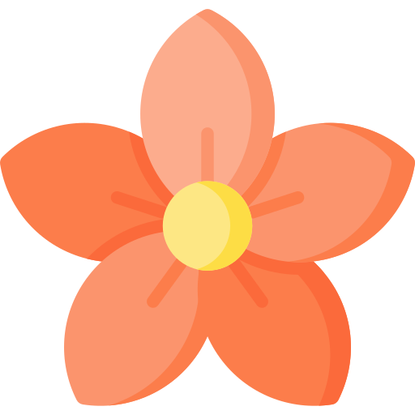

Danaco flores
Sobre nós
Sobre nós
Desejamos florir seu jardim, fazer que sua vida tenha mais cores e cheiros. O mundo pode não ser delicado como uma flor, mas buscamos torna-lo mais florido.
Dos momentos felizes de uma grande paixão, até os momentos tristes de uma perda, estaremos sempre ao seu lado, buscando a entrega do melhor serviço possível.
Produtos:
 Buquê redondo
Buquê redondo
 Buquê desconstruído
Buquê desconstruído
 Buquês cascata
Buquês cascata
 Buquê braçada ou ramalhete
Buquê braçada ou ramalhete
 Buquê greenery
Buquê greenery
Pétalas para casamentos (500 unidades)
 Flores específicas (Clique aqui para selecionar)
Flores específicas (Clique aqui para selecionar)
 Coroa de flores
Coroa de flores
Rosa Danaco
A flor característica da Danaco, e nosso maior orgulho, extremamente linda e estilosa, ótima para desfiles e fotos compostas.
Seus espinhos são afiados devido à sua criação natural, portanto, tenha em mente que será necessário suporta-los.
Porém, sua flor é extremamente cheirosa e passa um ar intelectual, ótima também para formaturas.
Existem pouquíssimas unidades, e após a compra é necessário a garantia de cultivo, pois é uma flor em extinção e deve ser cuidada da melhor forma possível.